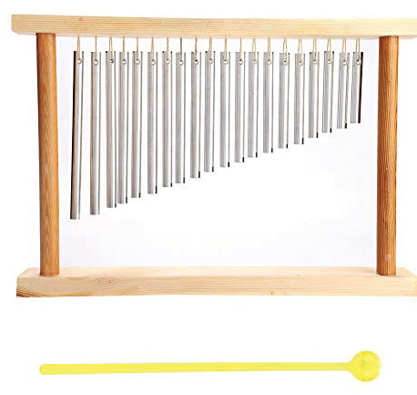
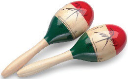
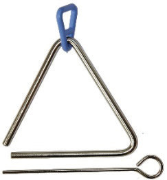

known as organology. Organology is a crucial field that develops the understanding of musical instruments and their role in human culture. By studying instruments from different time periods and regions, organology helps to understand how music has evolved and how instruments shape musical traditions across the world. Generally, this field is important because it allows people to study and compare instruments from different cultures, helping to preserve and understand the history of music.
One of the most important aspects of organology is the classification of musical instruments. The Hornbostel-Sachs system is one of the most widely used systems for classifying musical instruments. It was developed in 1914 by two music scholars, Erich von Hornbostel and Curt Sachs. This system categorises instruments based on how they produce sound. It is used all over the world to help people study and understand different musical instruments from various cultures. According to the Hornbostel-Sachs system, there are five main groups of musical instruments, namely, idiophones, chordophones, aerophones, membranophones and electrophones.
Idiophones
These are musical instruments that produce sound when the whole body of an instrument vibrates after being struck, rubbed, scraped, plucked or shaken. Due to their ways of producing sound, in some cases, these instruments are termed as percussions. Triangles, bar chimes, maracas, cymbals and claves are examples of Western idiophones. Manyanga, kayamba, chungu na kigoda, kinu na mchi (mortar and pestle), mbeta, njuga, marimba ya mkono (lamellaphone) and marimba ya vibao (xylophone) are examples of traditional Tanzanian idiophones. Figure 5.1 shows examples of idiophones.


